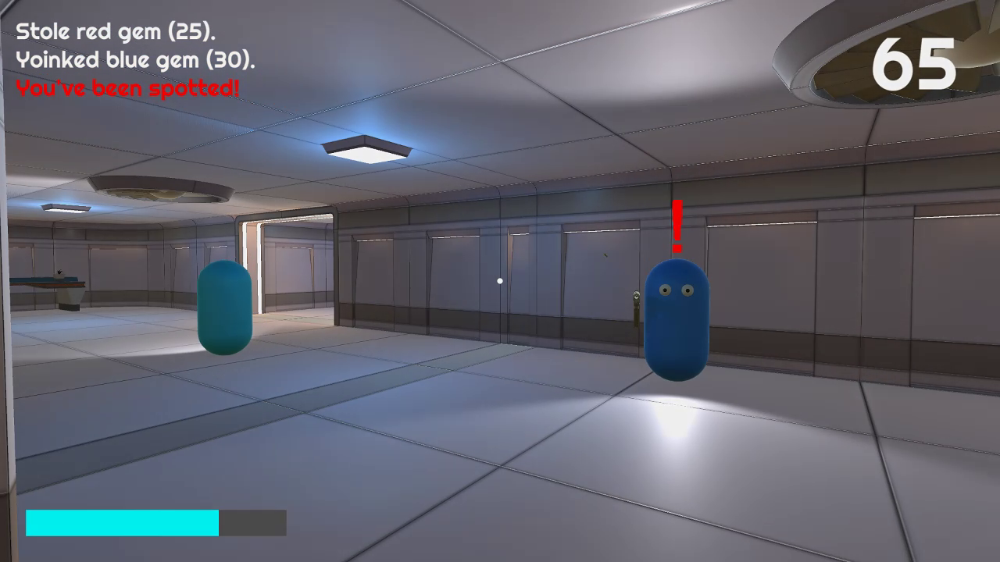
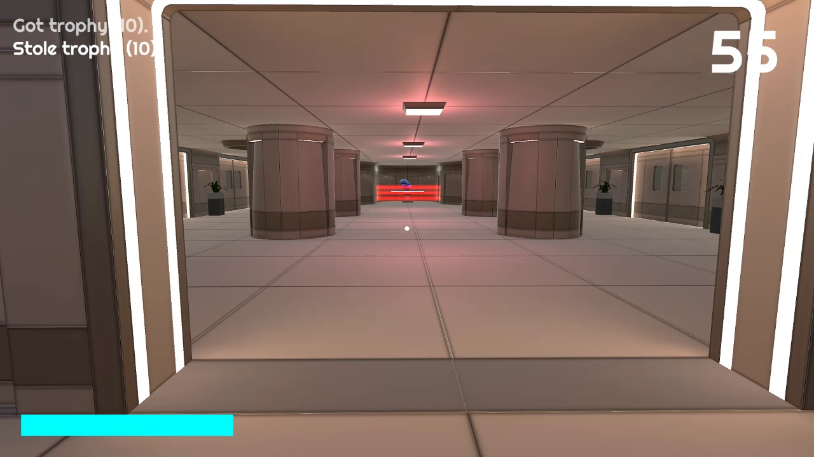
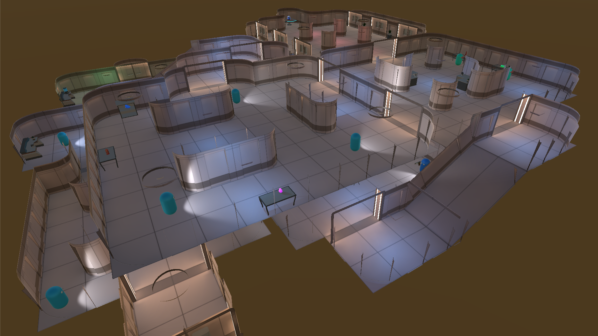

Freeze Heist
- Solo project, developed as part of my coursework
- Developed in Unity
- Tasked with building a game from a first person shooter skeleton project
- Designed and programmed a stealth game with unique mechanics, going above and beyond the marking scheme
Freeze Heist was developed as part of my coursework on Computer Science for Games. I opted to make a stealth game, with freezing time as the core mechanic. Your goal is to collect as much loot as possible without getting caught. You will be using your ability to freeze time to get past 3 different types of guards. Each collected item makes you slower, making the game more difficult as you progress. More valuable loot requires tripping an alarm, which causes more enemies to spawn, creating a risk vs. reward situation for the player.
Enemy behaviour was implemented using state machines. For instance, the patrolling enemy can go from its neutral patrol state, to an alert state once the player is in sight, followed by an aggro state if the player does not escape sight in time. The alert and aggro states are telegraphed to the player with '?' and '!' icond above the enemy's head. The enemy reverts back from the aggro state into the alert state into the neutral state if the player escapes.
  